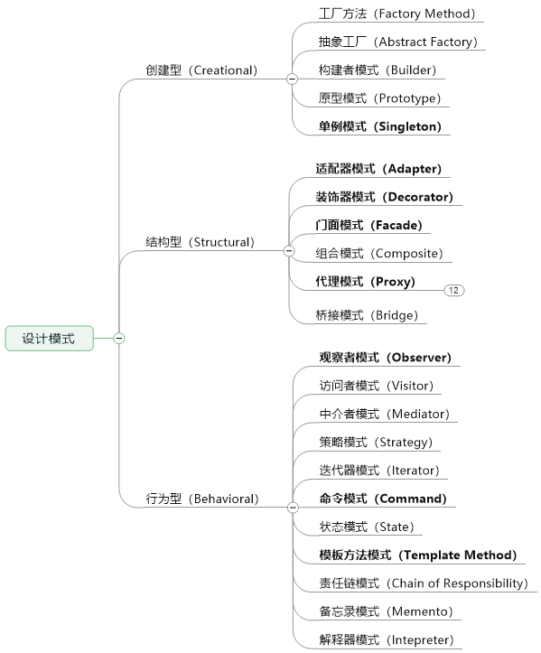

GOF的设计模式，大话设计模式，Head First设计模式3本书之前都看过，但一聊起来总觉得描述不成体系，归根到底就是没彻底搞明白，书本上的看了只是当时明白，不实践，或是实践了但没回头和书本上的理论对照总结，那终归不是自己的知识；
模式就是方法论/工具 ，一定要牢记在心，工具箱里有各种趁手的武器，设计时才能有比较和选择，站在巨人的肩膀上，可以看的更远；
这次我再重新学一遍，不仅是要知道每个设计模式的分类/定义，更要结合JDK和开源框架中的应用来深入理解。本篇是第一篇，列举所有模式和应用场景，后续会对每个模式写一篇，包含的模式的概念，解决问题，适用场景，实现类图和示例代码；
什么是设计模式？
什么是模式？在某些场景下，针对某类问题的某种通用的解决方案
- 场景：项目所在的环境；
- 问题：约束条件，项目目标等；
- 解决方案：通用、可复用的设计，解决约束达到目标；
在软件工程中，设计模式（design pattern）是对软件设计中普遍存在（反复出现）的各种问题，所提出的解决方案。这个术语是由埃里希·伽玛（Erich Gamma）等人在1990年代从建筑设计领域引入到计算机科学的。
设计模式并不直接用来完成代码的编写，而是描述在各种不同情况下，要怎么解决问题的一种方案。
面向对象设计模式通常以类别或对象来描述其中的关系和相互作用，但不涉及用来完成应用程序的特定类别或对象。
设计模式能使不稳定依赖于相对稳定、具体依赖于相对抽象，避免会引起麻烦的紧耦合，以增强软件设计面对并适应变化的能力。
备注：文中没有内聚性的描述一个模式的所有内容，而是对同一个模式在概念/JDK应用/实际应用中分开描述，是为了自己在阅读时脑子里能回忆上下文达到强化记忆的效果，看模式的应用时不懂模式是啥意思了强迫自己再回头看看概念；
有哪些设计模式？
设计模式分创建型、结构型和行为型3种

创建型（Creational）
- 单例模式（Singleton）：确保一个类只有1个实例，而且自行实例化并向整个系统提供这个实例；
- 抽象工厂模式（Abstract Factory）：为创建一组相关或相互依赖的对象提供一个接口，而且无需指定它们的具体类；
- 工厂方法（Factory Method）：定义一个用户创建对象的接口，让子类决定初始化哪一个类，工厂方法使一个类的实例化延迟到子类；
- 生成器模式（Builder）：将一个复杂对象的构建与它的表示分离，使得同样的构建过程可以构建不同的表示；
- 原型模式（Prototype）：用原型实例指定创建对象的种类，并且通过拷贝这些对象的原型创建新的对象
结构型（Structural）
- 适配器模式（Adapter）：将一个类的接口变换成客户端所期待的另一种接口，从而使原本因不匹配而无法在一起工作的两个类能够在一起工作；
- 装饰器模式（Decorator）：动态的将一个对象添加一些额外的规则，就增强功能来说，它比生成子类更为灵活；
- 桥接模式（Bridge）：将抽象和实现解耦，使得两者可以独立的变化；
- 组合模式（Composite）：将对象组合成树形结构以表示
部分-整体的层次结构，使得用户对单个对象和组合对象的使用具有一致性； - 外观模式（Facade）：要求一个子系统的外部与其内部的通信必须通过一个统一的对象进行，门面模式是提供一个更高层次的接口，使得子系统更易于使用；
- 代理模式（Proxy）：为其他对象提供一种代理以控制对这个对象的访问；
- 享元模式（Flyweight）：使用共享对象可有效地支持大佬的细粒度对象；
行为型（Behavioral）
- 命令模式（Command）：把一个请求或者操作封装在命令对象中。命令模式允许系统使用不同的请求把客户参数化，对请求排队或者基类请求日志，可以提供命令的撤销和恢复功能；
- 状态模式（State）：当一个对象内在状态改变时允许其改变行为，这个对象看起来看起来像是改变了其类；
- 模板方法模式（Template Method）：定义一个操作中的算法的骨架，而将一些步骤延迟到子类中，使得子类可以不改变一个算法的结构即可重定义该算法的某些特定步骤；
- 策略模式（Strategy）：定义一组算法，将每个算法封装起来，并且使他们之间可以互换；
- 迭代器模式（Iterator）：提供一种方法访问一个容器对象中各个元素，而又不需暴露该对象的内部细节；
- 解释器模式（Interceptor）：给定一种语言，定义它的文法的一种表示，并定义一个解释器，该解释器使用该表示来解释语言中的句子；
- 观察者模式（Observer）：定义对象间一对多的依赖关系，使得每当一个对象改变状态，则所有依赖于它的对象都会得到通知并自动更新。
- 中介者（Mediator）：用一个中介的对象封装一系列的对象交互，中介者使各个对象不需要显式的相互作用，从而使其耦合松散，并且可以独立的改变它们之间的交互；
- 访问者模式（Visitor）：封装一些作用于某个数据结构中的各元素的操作，它可以在不改变数据结构的前提下定义作用于这些元素的新的操作；
- 责任链模式（Chain of Responsibility）：使多个对象都有机会处理请求，从而避免了请求的发送者和接受者之间的耦合关系。将这些对象练成一条链，并沿着这条链条传递该请求直到有对象处理它为止。
- 备忘录模式（Memento）：在不破坏封装性的前提下，捕获一个对象的内部状态，这样以后就可将该对象恢复到原先保存的状态；
设计模式在JDK中的应用
创建型（Creational）
- 单例模式（Singleton）：只允许一个实例。在 Effective Java中建议使用Enum.
- java.lang.Runtime#getRuntime()
- java.awt.Toolkit#getDefaultToolkit()
- java.awt.GraphicsEnvironment#getLocalGraphicsEnvironment()
- java.awt.Desktop#getDesktop()
- 抽象工厂模式（Abstract Factory）：创建一组有关联的对象实例。这个模式在JDK中也是相当的常见，还有很多的framework（如Spring）。我们很容易找到这样的实例。
- java.util.Calendar#getInstance()
- java.util.Arrays#asList()
- java.util.ResourceBundle#getBundle()
- java.sql.DriverManager#getConnection()
- java.sql.Connection#createStatement()
- java.sql.Statement#executeQuery()
- java.text.NumberFormat#getInstance()
- javax.xml.transform.TransformerFactory#newInstance()
- 工厂方法（Factory Method）：简单来说，按照需求返回一个类型的实例。
- java.lang.Proxy#newProxyInstance()
- java.lang.Object#toString()
- java.lang.Class#newInstance()
- java.lang.reflect.Array#newInstance()
- java.lang.reflect.Constructor#newInstance()
- java.lang.Boolean#valueOf(String)
- java.lang.Class#forName()
- 生成器模式（Builder）：主要用来简化一个复杂的对象的创建。这个模式也可以用来实现一个 Fluent Interface。
- java.lang.StringBuilder#append()
- java.lang.StringBuffer#append()
- java.sql.PreparedStatement
- javax.swing.GroupLayout.Group#addComponent()
- 原型模式（Prototype）：使用自己的实例创建另一个实例。有时候，创建一个实例然后再把已有实例的值拷贝过去，是一个很复杂的动作。所以，使用这个模式可以避免这样的复杂性。
- java.lang.Object#clone()
- java.lang.Cloneable
结构型（Structural）
- 适配器模式（Adapter）：把一个接口或是类变成另外一种。
- java.util.Arrays#asList()
- javax.swing.JTable(TableModel)
- java.io.InputStreamReader(InputStream)
- java.io.OutputStreamWriter(OutputStream)
- javax.xml.bind.annotation.adapters.XmlAdapter#marshal()
- javax.xml.bind.annotation.adapters.XmlAdapter#unmarshal()
- 装饰器模式（Decorator）：为一个对象动态的加上一系列的动作，而不需要因为这些动作的不同而产生大量的继承类。这个模式在JDK中几乎无处不在，所以，下面的列表只是一些典型的。
- java.io.BufferedInputStream(InputStream)
- java.io.DataInputStream(InputStream)
- java.io.BufferedOutputStream(OutputStream)
- java.util.zip.ZipOutputStream(OutputStream)
- java.util.Collections#checkedList|Map|Set|SortedSet|SortedMap
- 桥接模式（Bridge）：把抽象和实现解藕，于是接口和实现可在完全独立开来。
- AWT (提供了抽象层映射于实际的操作系统)
- JDBC
- 组合模式（Composite）：让使用者把单独的对象和组合对象混用。
- javax.swing.JComponent#add(Component)
- java.awt.Container#add(Component)
- java.util.Map#putAll(Map)
- java.util.List#addAll(Collection)
- java.util.Set#addAll(Collection)
- 外观模式（Facade）：用一个简单的接口包状一组组件，接口，抽象或是子系统。
- java.lang.Class
- javax.faces.webapp.FacesServlet
- 代理模式（Proxy）：用一个简单的对象来代替一个复杂的对象。
- java.lang.reflect.Proxy
- RMI
- 享元模式（Flyweight）：有效率地存储大量的小的对象。
- java.lang.Integer#valueOf(int)
- java.lang.Boolean#valueOf(boolean)
- java.lang.Byte#valueOf(byte)
- java.lang.Character#valueOf(char)
行为型（Behavioral）
- 命令模式（Command）：把一个或一些命令封装到一个对象中。
- java.lang.Runnable
- javax.swing.Action
- 状态模式（State）：当一个对象内在状态改变时允许其改变行为，这个对象看起来看起来像是改变了其类；
- 模板方法模式（Template Method）：允许子类重载部分父类而不需要完全重写。
- java.util.Collections#sort()
- java.io.InputStream#skip()
- java.io.InputStream#read()
- java.util.AbstractList#indexOf()
- 策略模式（Strategy）：定义一组算法，并把其封装到一个对象中。然后在运行时，可以灵活的使用其中的一个算法。
- java.util.Comparator#compare()
- javax.servlet.http.HttpServlet
- javax.servlet.Filter#doFilter()
- 迭代器模式（Iterator）：提供一种一致的方法来顺序遍历一个容器中的所有元素。
- java.util.Iterator
- java.util.Enumeration
- 解释器模式（Interceptor）：一个语法解释器的模式。
- java.util.Pattern
- java.text.Normalizer
- java.text.Format
- 观察者模式（Observer）：允许一个对象向所有的侦听的对象广播自己的消息或事件。
- java.util.EventListener
- javax.servlet.http.HttpSessionBindingListener
- javax.servlet.http.HttpSessionAttributeListener
- javax.faces.event.PhaseListener
- 中介者（Mediator）：用来减少对象单的直接通讯的依赖关系。使用一个中间类来管理消息的方向。
- java.util.Timer
- java.util.concurrent.Executor#execute()
- java.util.concurrent.ExecutorService#submit()
- java.lang.reflect.Method#invoke()
- 访问者模式（Visitor）：作用于某个对象群中各个对象的操作. 它可以使你在不改变这些对象本身的情况下,定义作用于这些对象的新操作.
- javax.lang.model.element.Element 和javax.lang.model.element.ElementVisitor
- javax.lang.model.type.TypeMirror 和javax.lang.model.type.TypeVisitor
- 责任链模式（Chain of Responsibility）：把一个对象在一个链接传递直到被处理。在这个链上的所有的对象有相同的接口（抽象类）但却有不同的实现。
- java.util.logging.Logger#log()
- javax.servlet.Filter#doFilter()
- 备忘录模式（Memento）：给一个对象的状态做一个快照。Date类在内部使用了一个long型来做这个快照。
- java.util.Date
- java.io.Serializable
设计模式的实际编码应用
todo 需持续完善
创建型（Creational）
- 单例模式（Singleton）：
- Spring的bean，默认就是单例级别的
- 抽象工厂模式（Abstract Factory）：
- 工厂方法（Factory Method）：
- 生成器模式（Builder）：
- 原型模式（Prototype）：
结构型（Structural）
- 适配器模式（Adapter）
- 新旧接口的版本兼容
- 装饰器模式（Decorator）：
- 桥接模式（Bridge）：面向接口编程思想
- 组合模式（Composite）：
- 级联操作
- 外观模式（Facade）：
- SLF4J框架
- 代理模式（Proxy）：AOP思想（动态代理）
- 享元模式（Flyweight）：缓存思想
行为型（Behavioral）
- 命令模式（Command）：
- 状态模式（State）：
- 订单状态
- 模板方法模式（Template Method）：抽象类实现公共逻辑，子类实现差异化
- 策略模式（Strategy）：
- if-else逻辑
- 迭代器模式（Iterator）：
- 解释器模式（Interceptor）：
- 观察者模式（Observer）：
- zookeeper/etcd等配置中心的watch机制/服务发现机制
- 中介者（Mediator）：
- 访问者模式（Visitor）：
- 责任链模式（Chain of Responsibility）：
- 凡是带有
Filter关键词的，基本都在用这个设计模式
- 凡是带有
- 备忘录模式（Memento）：